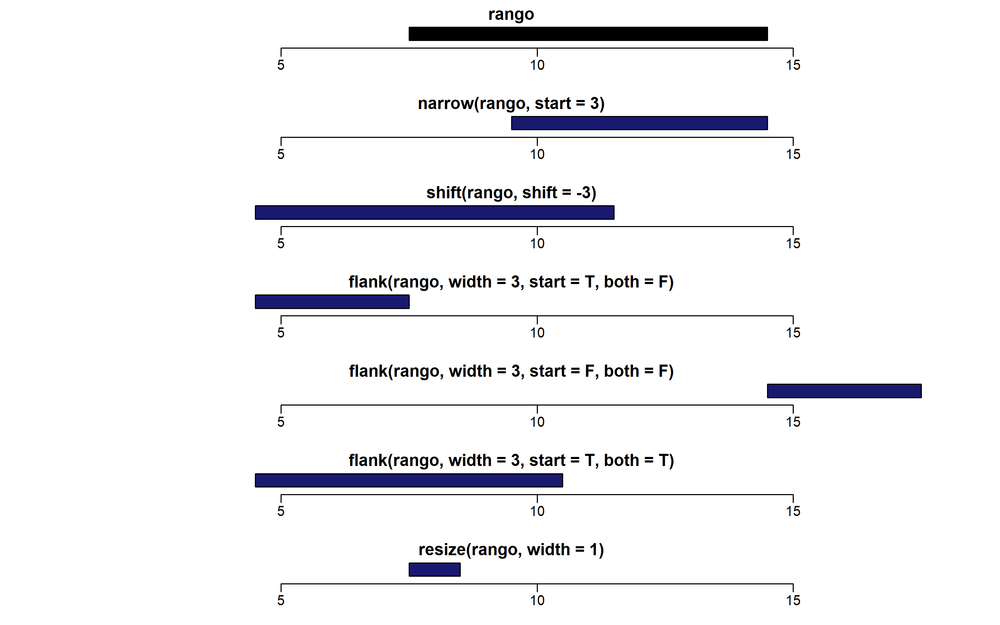
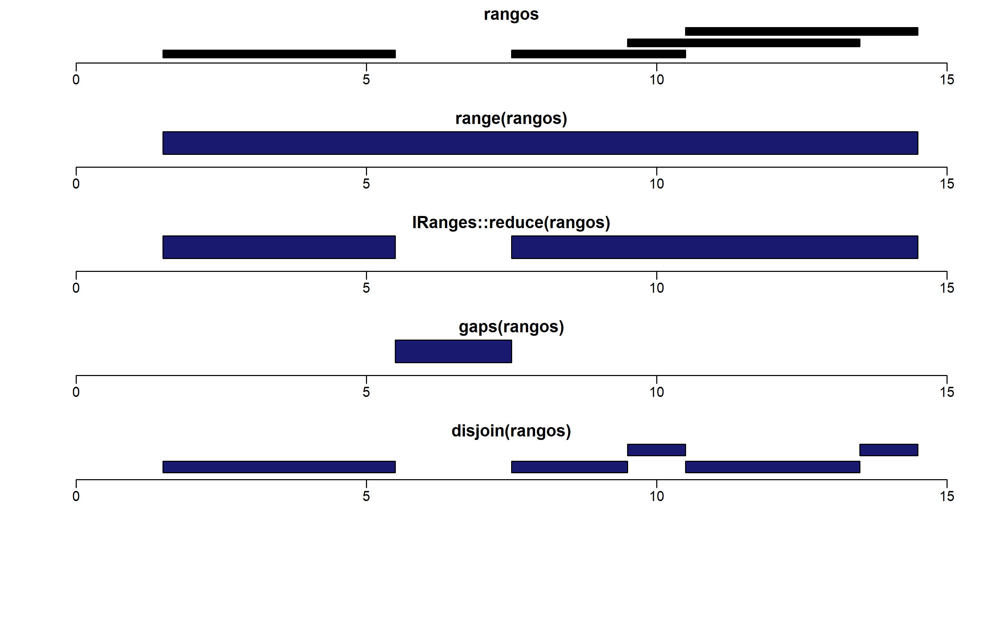

library(IRanges) # carguemos el paquete¡Bienvenidos!
Mi nombre es Piero Palacios, y esta es la primera de una serie de publicaciones que se enfocarán en enseñar los paquetes básicos de Bioconductor para el análisis genómico. Puedes leer más acerca de mí en la sección: Acerca de mí.
Lo primero que puede pasar por tu mente es: ¿Y qué es Bioconductor? ¿Para qué me serviría aprender sobre Bioconductor?
Bueno, si eres biólogo o trabajas con datos biológicos créeme que te va a servir bastante.
Ahora bien, la página web de Bioconductor nos dice lo siguiente:
“La misión del proyecto Bioconductor es desarrollar, apoyar y difundir software libre de código abierto que facilite el análisis riguroso y reproducible de datos de ensayos biológicos actuales y emergentes. Estamos dedicados a construir una comunidad diversa, colaborativa y acogedora de desarrolladores y científicos de datos.”
Dicho en otras palabras, Bioconductor es similar al repositorio de paquetes de R, con la diferencia de que es un repositorio de softwares creado para el análisis de datos biológicos con enfoque en la reproducibilidad del análisis.
Cabe resaltar que la reproducibilidad de resultados en biología es un reto y, tener softwares enfocados en ayudar a aliviar ese problema, es un gran avance para las ciencias biológicas.
En fin, como ya te habrás percatado por el título, este post es una pequeña introducción a los rangos genómicos asi que ¡vamos al asunto!
Rangos genómicos
Los pares de bases del ADN son enumerados del 1 hasta un número grande (podría ser más de 3 millones dependiendo de la especie). Estas enumeraciones nos ayudan a situarnos en regiones genómicas de interés como genes, regiones promotoras, regiones no codificantes, etc.
Dicho esto, ya podemos definir qué es un rango genómico. Un rango genómico es simplemente una región del ADN delimitada por dos números enteros o “coordenadas genómicas” que son de un interés específico para el investigador.
Ahora bien, dedicaremos esta serie de artículos a los rangos genómicos con datos inventados y con datos provenientes de un experimento de precipitación de inmuno cromatina (ChIP-Seq). Esta técnica tiene por objetivo secuenciar regiones específicas del genoma que son sitios de unión de proteínas como factores de transcripción.
La pregunta siguiente sería: ¿Para qué nos sirve secuenciar éstas regiones? La respuesta dicha de manera resumida es: “depende”. Si lo sé, nada científico. Lo que sucede es que dependen del objetivo, por ejemplo: estudiar el cáncer de mama o efectos en el sabor del plátano. Para el caso del cáncer, es de interés encontrar a los genes cercanos a éstas regiones, ya que pueden ser motivo de tratamientos o cura. Es ahí donde entran los rangos genómicos al conocer la ubicación estas regiones cercanas a los genes.
Antes de empezar a explorar los paquetes de Bioconductor, necesitamos instalarlos:
BiocManager::install("IRanges") BiocManager::install("GenomicRanges") BiocManager::install("genomicsclass/ERBS") install_github("genomicsclass/ph525x")
En caso no tengas instalado Bioconductor, puedes instalarlo como lo mencionan en su página web: Instalar bioconductor
Hecho lo anterior, primero revisaremos el paquete IRanges el cual es la base del paquete GenomicRanges.
Psdt: El material que se discutirá está inspirado en el libro online Data analysis for genomics de Rafael Irrizary y Michael Love. ¡Te recomiendo revisarlo!
Paquete IRanges
La primera función que estudiaremos es IRanges(). La función tiene tres argumentos principales: inicio (start), fin (end) y ancho (width). Por ejemplo, si definimos un rango \([8,14] = 8,9,10,11,12,13,14\) este tendrá un ancho o width de siete números.
rango<- IRanges(8,14)
rangoIRanges object with 1 range and 0 metadata columns:
start end width
<integer> <integer> <integer>
[1] 8 14 7Podemos extraer información como el inicio, el final y el ancho:
start(rango)[1] 8end(rango)[1] 14width(rango)[1] 7También podemos definir varios rangos al mismo tiempo:
IRanges(start = c(2,4,7),end = c(10,15,14))IRanges object with 3 ranges and 0 metadata columns:
start end width
<integer> <integer> <integer>
[1] 2 10 9
[2] 4 15 12
[3] 7 14 8Operaciones intra-rangos
Las operaciones intra-rangos funcionan sobre cada rango de manera independiente.Entre las operaciones intra-rangos podemos mencionar a narrow, shift, flank y resize. Existen otras operaciones intra-rangos que pueden verse en la ayuda ?intra-range-methods.
library(rafalib)
mypar(7,1)
narrow(rango,start = 3) # encoge el rango desde el inicioIRanges object with 1 range and 0 metadata columns:
start end width
<integer> <integer> <integer>
[1] 10 14 5plotRanges(rango,xlim = c(1,18))
plotRanges(narrow(rango,start = 3),xlim = c(1,18),col="midnightblue")
shift(rango,shift = -3) # mover el rango 3 pares de bases a la izquierdaIRanges object with 1 range and 0 metadata columns:
start end width
<integer> <integer> <integer>
[1] 5 11 7plotRanges(shift(rango,shift = -3),xlim = c(1,18),col="midnightblue")
flank(rango,width = 3,start = T,both = F) # rodea el rango con 3 pares de bases a partir del inicioIRanges object with 1 range and 0 metadata columns:
start end width
<integer> <integer> <integer>
[1] 5 7 3plotRanges(flank(rango,width = 3,start = T,both = F),xlim = c(1,18),col="midnightblue")
flank(rango,width = 3,start = F,both = F) # rodea el rango con 3 pares de bases a partir del finalIRanges object with 1 range and 0 metadata columns:
start end width
<integer> <integer> <integer>
[1] 15 17 3plotRanges(flank(rango,width = 3,start = F,both = F),xlim = c(1,18),col="midnightblue")
flank(rango,width = 3,start = T,both = T) # rodea el rango con 3 pares de bases para la izquierda y para la derecha a partir del inicioIRanges object with 1 range and 0 metadata columns:
start end width
<integer> <integer> <integer>
[1] 5 10 6plotRanges(flank(rango,width = 3,start = T,both = T),xlim = c(1,18),col="midnightblue")
resize(rango,width = 1) # redimensiona el rango a una base.IRanges object with 1 range and 0 metadata columns:
start end width
<integer> <integer> <integer>
[1] 8 8 1plotRanges(resize(rango,width = 1),xlim = c(1,18),col="midnightblue")
Operaciones inter-rangos
A diferencia de las operaciones intra-rangos, las operaciones inter-rangos trabajan sobre un conjunto de rangos, y el resultado depende de todos los rangos.
Veamos cómo funcionan:
rangos<-IRanges(start = c(2,8,11,10),end = c(5,10,14,13))
mypar(6,1)
plotRanges(rangos,xlim = c(0,15))
range(rangos) # da el rango de inicio a fin de todos los rengosIRanges object with 1 range and 0 metadata columns:
start end width
<integer> <integer> <integer>
[1] 2 14 13plotRanges(range(rangos),xlim = c(0,15),col="midnightblue")
IRanges::reduce(rangos) # colapsa los rangos sobrepuestos en uno soloIRanges object with 2 ranges and 0 metadata columns:
start end width
<integer> <integer> <integer>
[1] 2 5 4
[2] 8 14 7plotRanges(IRanges::reduce(rangos),xlim = c(0,15),col="midnightblue")
gaps(rangos) # retorna el rango que no cubre ningún rangoIRanges object with 1 range and 0 metadata columns:
start end width
<integer> <integer> <integer>
[1] 6 7 2plotRanges(gaps(rangos),xlim = c(0,15),col="midnightblue")
disjoin(rangos) # retorna el máximo número de rangos no sobrepuestosIRanges object with 5 ranges and 0 metadata columns:
start end width
<integer> <integer> <integer>
[1] 2 5 4
[2] 8 9 2
[3] 10 10 1
[4] 11 13 3
[5] 14 14 1plotRanges(disjoin(rangos),xlim = c(0,15),col="midnightblue")
Ahora que comprendemos las funciones básicas del paquete IRanges, es momento de identificar en qué se diferencia un rango y un rango genómico.
GenomicRanges
Los rangos genómicos adicionalmente a los rangos que hemos visto, contienen dos partes esenciales de información: el nombre del cromosoma y la direccionalidad de la hebra de ADN (+, - o * so no se especifica).
library(GenomicRanges)Empecemos por crear tres rangos genómicos pertenecientes al cromosoma 21 de la especie Homo sapiens. Supogamos que estos rangos pertenecen al genoma T2T-CHM13v2.0 el cual es la anotación telómero a telómero. Cabe resaltar que éstos rangos son inventados ya que no estamos usando una base de datos real.
gr<-GRanges("chr21",IRanges(start = c(5,12,14),end=c(25,31,40)),
strand = "+",seqlengths = c(chr21=100L))
genome(gr)<-"T2T-CHM13v2.0"
grGRanges object with 3 ranges and 0 metadata columns:
seqnames ranges strand
<Rle> <IRanges> <Rle>
[1] chr21 5-25 +
[2] chr21 12-31 +
[3] chr21 14-40 +
-------
seqinfo: 1 sequence from T2T-CHM13v2.0 genomeseqnames(gr)factor-Rle of length 3 with 1 run
Lengths: 3
Values : chr21
Levels(1): chr21seqlengths(gr)chr21
100 Usemos las funciones de rangos sobre el rango genómico creado.
shift(gr,10)GRanges object with 3 ranges and 0 metadata columns:
seqnames ranges strand
<Rle> <IRanges> <Rle>
[1] chr21 15-35 +
[2] chr21 22-41 +
[3] chr21 24-50 +
-------
seqinfo: 1 sequence from GRCh38.p14 genomeshift(gr,80)GRanges object with 3 ranges and 0 metadata columns:
seqnames ranges strand
<Rle> <IRanges> <Rle>
[1] chr21 85-105 +
[2] chr21 92-111 +
[3] chr21 94-120 +
-------
seqinfo: 1 sequence from GRCh38.p14 genomeCuando usamos shift() con 80 pares de bases, los rangos sobrepasan la longitud del cromosoma que es 100. Para evitar que suceda esto usemos trim().
trim(shift(gr,80))GRanges object with 3 ranges and 0 metadata columns:
seqnames ranges strand
<Rle> <IRanges> <Rle>
[1] chr21 85-100 +
[2] chr21 92-100 +
[3] chr21 94-100 +
-------
seqinfo: 1 sequence from GRCh38.p14 genomeFinalmente, la clase GRanges nos permite adicionar columnas de metadata con la función mcols().
mcols(gr)DataFrame with 3 rows and 0 columnsmcols(gr)$value<-c(0.1,0.9,0.003)
grGRanges object with 3 ranges and 1 metadata column:
seqnames ranges strand | value
<Rle> <IRanges> <Rle> | <numeric>
[1] chr21 5-25 + | 0.100
[2] chr21 12-31 + | 0.900
[3] chr21 14-40 + | 0.003
-------
seqinfo: 1 sequence from GRCh38.p14 genome#Incluso puede borrarse metadata
mcols(gr)$value<-NULL
grGRanges object with 3 ranges and 0 metadata columns:
seqnames ranges strand
<Rle> <IRanges> <Rle>
[1] chr21 5-25 +
[2] chr21 12-31 +
[3] chr21 14-40 +
-------
seqinfo: 1 sequence from GRCh38.p14 genomeEn el siguiente artículo discutiremos más sobre la clase GRanges. Veremos la clase GRangesList donde formaremos listas de rangos genómicos, operaciones sobre estas listas, aplicaciones en datos reales de ChIP-Seq y le daremos sentido biológico a las operaciones de la clase IRanges.